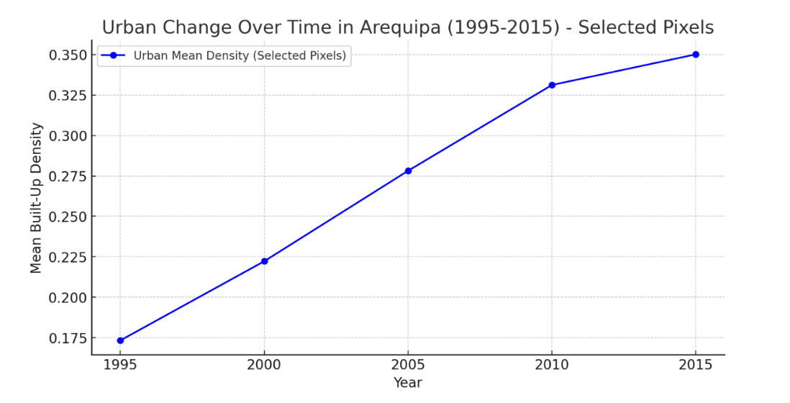

1995 to 2015
Mapping Urban Growth in Arequipa
This GIS project examined how the urban footprint of Arequipa, Peru changed between 1995 and 2015. Five time steps were analysed to understand both the amount of built-up expansion and the spatial structure of that growth.
Statistical indicators were combined with landscape metrics, including Edge Density, Patch Density and Patch Cohesion Index, to investigate whether the city was becoming more fragmented or more compact as it expanded.

Project overview
How did Arequipa grow?
Arequipa is Peru's second-largest city and has experienced substantial urbanisation. Expansion brings economic and infrastructural opportunities, but it can also create pressure on land, infrastructure and environmentally sensitive areas.
Rather than looking only at how much land became urban, this project investigated how the shape and spatial organisation of the city changed over two decades.
The analysis tracked built-up development at five-year intervals and then used landscape metrics to describe fragmentation, connectivity and compactness.
Five observation dates
Selected grid resolution
Spatial change
Following the expanding urban footprint
The built-up area increased during every observation period, from 62.05 km² in 1995 to 91.13 km² in 2015.
The maps show that development did not simply expand evenly outward from the existing city. New urban areas appeared around the edges of the built-up footprint and along important development corridors.
Growth remained continuous throughout the twenty-year period, but the amount of additional urban land created during each five-year interval gradually became smaller.
1995
62.05 km²
2000
71.99 km²
2005
80.47 km²
2010
87.67 km²
2015
91.13 km²

Methodology
Choosing the right scale for local analysis
Landscape metrics depend partly on the spatial unit used to calculate them. A grid that is too small can provide detailed information but become computationally demanding, while a very large grid can hide important local variation.
Three alternatives were therefore tested: 500 × 500 m, 750 × 750 m and 1000 × 1000 m.
Selected scale
750 × 750 m
A practical balance between spatial detail and computational efficiency.

From urban area to urban structure
Measuring built-up area tells us how much the city grew. Landscape metrics add another layer by describing whether development remained fragmented or became increasingly connected.
01
Fragmentation
Edge Density
0.02715
→
0.01149
Edge Density measures the amount of boundary between different landscape components relative to area.
The declining values suggest that individual urban areas became less fragmented as previously separate development increasingly joined together.


02
Urban patches
Patch Density
2.79×10⁻⁵
→
3.99×10⁻⁶
Patch Density represents the number of separate built-up patches within the landscape.
Its decline indicates that urban development became less dispersed, with separate patches gradually merging into a more continuous urban footprint.
03
Connectivity
Patch Cohesion Index
9.935
→
9.9463
Patch Cohesion describes the physical connectedness of the built-up landscape.
Its gradual increase supports the pattern shown by Edge Density and Patch Density: Arequipa's urban footprint became more connected as expansion continued.

Local analysis
Looking beyond the citywide pattern
Landscape metrics described the transformation of Arequipa as a whole, but a smaller northern area was also examined separately to see whether the citywide trend could be recognised locally.
The selected cells showed a consistent increase in mean built-up density between 1995 and 2015.
This provided a local-scale confirmation of the broader pattern: urban expansion continued while previously fragmented development became increasingly consolidated.
Local time series
Built-up density through time
The local time-series graph tracks the increasing proportion of built-up land within the selected northern cells.
Once the final graph image is available, it will sit alongside this explanation rather than appearing as a full-width figure.

Growth changed not only the size of Arequipa, but also its spatial form.
Between 1995 and 2015, Arequipa experienced substantial urban expansion. At the same time, declining Edge Density and Patch Density together with increasing Patch Cohesion indicate that the urban footprint became progressively more connected and compact.